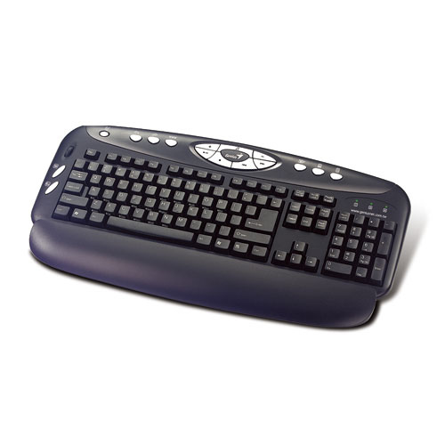
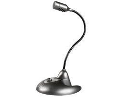
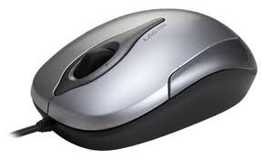
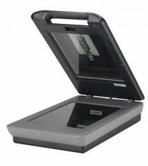
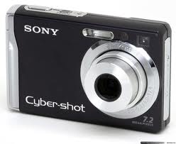
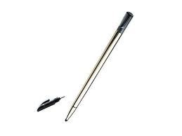

| Teclado | Micrófono | Ratón | Escáner | |||
|  |  |  |  | |||
El teclado es un dispositivo eficaz para introducir datos no gráficos como rótulos de imágenes asociados con un despliegue de gráficas. |
Los micrófonos son los transductores encargados de transformar energía acústica en energía eléctrica, permitiendo, por lo tanto el registro, almacenamiento, transmisión y procesamiento electrónico de las señales de audio. |
Es un dispositivo electrónico que nos permite dar instrucciones a nuestra computadora a través de un cursor que aparece en la pantalla y haciendo clic para que se lleve a cabo una acción determinada. |
Permite la introducción de imágenes gráficas al computador mediante un sistema de matrices de puntos, como resultado de un barrido óptico del documento.
|
|||
Cámara Digital |
Cámara Web | Lápiz Óptico | Joystick |
|||
 |
 |
 |  |
|||
Se conecta al ordenador y le transmite las imágenes que capta, pudiendo ser modificada y retocada, o volverla a tomar en caso de que este mal. |
Es una cámara de pequeñas dimensiones. Sólo es la cámara, no tiene LCD. Tiene que estar conectada al PC para poder funcionar, y esta transmite las imágenes al ordenador. Su uso es generalmente para videoconferencias por Internet. |
Es una unidad de ingreso de información que funciona acoplada a una pantalla fotosensible. Es un dispositivo exteriormente semejante a un lápiz, con un mecanismo de resorte en la punta o en un botón lateral, mediante el cual se puede seleccionar información visualizada en la pantalla. |
Es normalmente un dispositivo señalador relativo, que mueve un objeto en la pantalla cuando la palanca se mueve con respecto al centro y que detiene el movimiento cuando se suelta |